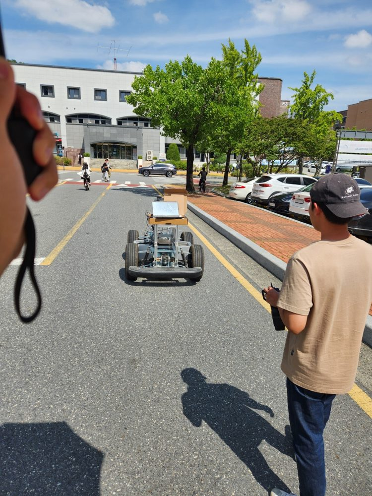
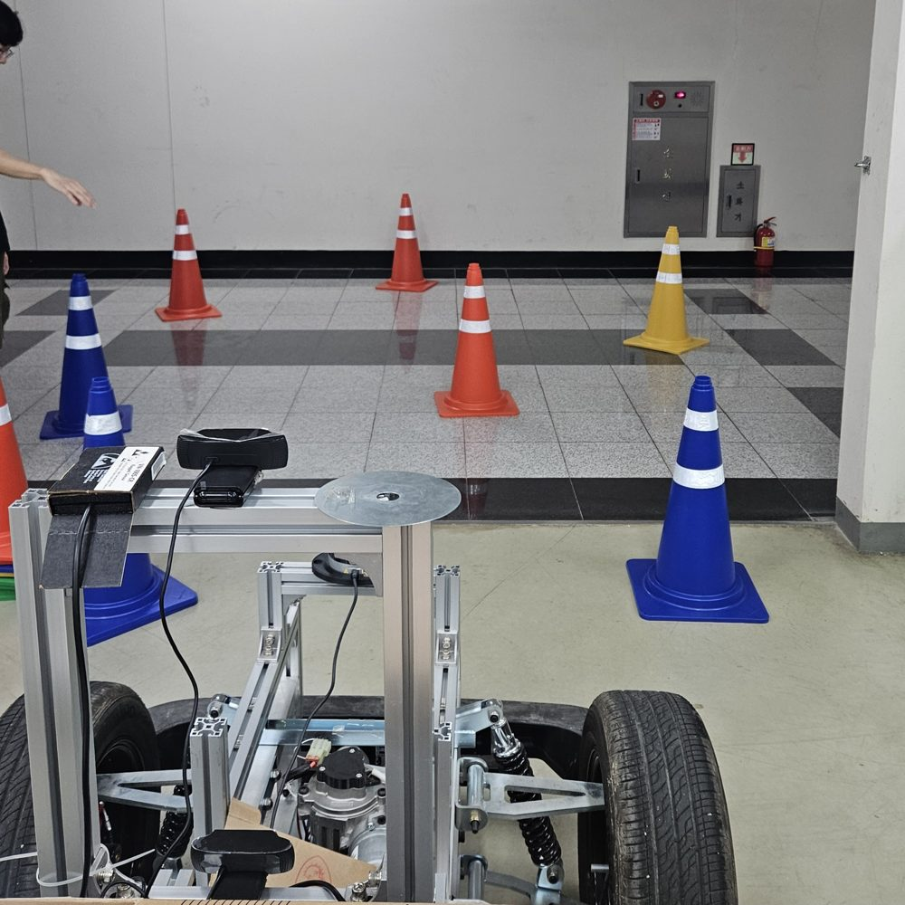

해결하려던 문제와 제약
예선 10분·본선 15분의 단일 주행으로 도로 경로 주행, 장애물 우회, 신호등 인식, 돌발 장애물 정지 미션을 통과하며 기록을 겨루는 실차 대회입니다.
▶ 대회 진행 방식 참고 영상 — 우리 팀 시연이 아니라, 예선(트랙 주행·highway 예선 코스)을 통과한 상위 팀만 참가하는 본선 출전 팀들의 주행 영상입니다.
개발 중 알고리즘 테스트 기록 — 대회 주행 영상이 없어 대신 싣는 팀 내부 테스트 자료입니다. ▶ waypoint 추종 및 LiDAR 회피 테스트 영상 (25.04)
참고 문서(팀 MTP가 대회 제출용으로 함께 작성, 개인정보 처리본): 연구계획서 · 기술보고서


- GPS가 불안정한 구간: 120m 안팎의 터널에서는 GPS가 잡히지 않았고 관성센서(IMU)는 시간이 지날수록 오차가 쌓였습니다(drift).
- 통제 지점 없는 명령: 인지 모듈마다 제각각 조향·속도 명령을 내는데, 이를 조율할 지점이 없었습니다.
- 실차 문제: 카메라 프레임 누락, 전력 부족, 진동에 따른 카메라·IMU 자세 변화, 브레이크 오일 누유, GNSS·ROS2 통신 끊김이 이어졌습니다.
본인 담당과 팀 분담
본인 담당:
- 팀장(개발 일정 수립·공유, 실습 환경 구성, 인수인계 문서화)
- waypoint 경로추종
- 명령 중재 판단 노드
팀원들과 함께: 센서 bring-up, EKF 센서퓨전 측위, 실차 테스트·튜닝
핵심 해결 과정
센서 → 측위 (팀원들과 함께)
LiDAR(VLP-16)·카메라·IMU·RTK-GPS를 구동하고 바퀴 회전량(휠 오도메트리)을 IMU·GPS와 EKF(여러 센서 값을 결합해 위치를 추정하는 확장 칼만 필터)로 융합해 GPS 음영구간에 대응했습니다.
경로추종 (본인)
경로추종 방식인 Pure Pursuit·Stanley를 검토한 뒤, 경로와의 방향 오차에 비례해 조향하고 직전 값과 부드럽게 섞는 저역통과 처리로 곡선에서 조향이 튀는 것을 줄였습니다.
명령 중재 (본인)
차선·경로 채널을 우선순위와 유효시간으로 중재하고 유효한 입력이 없으면 완전 제동(full-brake)하는 판단 노드 프로토타입을 만들었습니다.
실차 대응
튜닝, 테스트 주행, rosbag(센서·제어 메시지 기록 도구) 로깅, 분석을 반복하며 포트·RTK·속도·브레이크 값을 조정했습니다. 전력 부족은 보조배터리로 보강했습니다.
결과와 검증 한계
- 인지 모듈 일부가 빠져도 측위와 경로추종이 유지되어 완주했습니다(팀 회고 기준).
- 주행 로그가 남아 있지 않아 순위·정량 지표는 적지 않았습니다.
- 명령 중재 판단 노드는 소스 코드 수준의 프로토타입입니다.
회고 — "무엇이 빠져도 버티는가"를 먼저 설계하고 성능은 튜닝·테스트·로깅을 반복하며 끌어올린다는 것을 배웠습니다.
코드 근거
- 팀 최종 코드 Erp42_ws
- 기술 전체(측위·경로계획·판단·인지·차량 I/O)는 Erp42_ws README 참고.